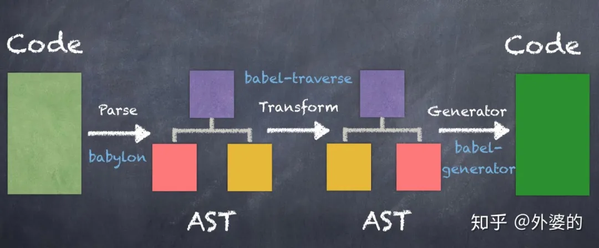

前端模块化演进
- 命名空间冲突
- 管理项目依赖和版本
- 控制依赖的加载顺序
- 可维护性
- 可复用性
原生JS组织阶段 -> 在线处理阶段 -> 预处理阶段
时间线
下面是最各大工具或框架的诞生时间，不知不觉，模块化的发展已有十年之久了。
生态
诞生时间
Node.js 2009年
NPM 2010年
requireJS(AMD) 2010年
seaJS(CMD) 2011年
broswerify 2011年
webpack 2012年
grunt 2012年
gulp 2013年
react 2013年
vue 2014年
angular 2016年
redux 2015年
vite 2020年
snowpack 2020年
10多年以前，前端模块化刚刚开始，正处在野蛮生长的阶段。这个过程中诞生了诸多模块化规范：AMD/CMD/CommonJS/ES6 Module。
AMD && CMD
首先开始在前端流行的模块化规范是AMD/CMD, 以及实践这两种规范的require.js和Sea.js, AMD和CMD可看作是“在线处理”模块的方案，也就是等到用户浏览web页面下载了对应的require.js和sea.js文件之后，才开始进行模块依赖分析，确定加载顺序和执行顺序。模块组织过程在线上进行。
AMD和CMD只是一种设计规范，而不是一种实现。
AMD
AMD 全称 Asynchronous Module Definition，即“异步模块定义”。它是一种组织前端模块的方式。
AMD 包括 require、define API。
// AMD API
require([module], callback)
define(id, [depends], callback)
require.config()
通过define来定义一个模块，然后使用require来加载一个模块, 使用require.config()指定引用路径。
//AMD
define('module', ['dep'], dep => {
return exports;
});
require(['module'], module => {
// do Somethind
});
AMD 采用异步的方式加载依赖，实现AMD的代表是 require.js。
AMD推崇依赖前置，在定义模块的时候就要声明其依赖的模块。要提前加载所有的依赖，然后才可以使用，而不是需要使用时再加载。
CMD
CMD即Common Module Definition，意为“通用模块定义”。
和AMD不同的是，CMD没有提供前置的依赖数组，而是接收一个factory函数，这个factory函数包括3个参数
- require: 一个方法标识符，调用它可以动态的获取一个依赖模块的输出
- exports: 一个对象，用于对其他模块提供输出接口，例如:exports.name = "xxx"
- module: 一个对象，存储了当前模块相关的一些属性和方法，其中module.exports属性等同于上面的exports
// CMD
define(function (require, exports, module) {
//依赖就近书写
var module1 = require('Module1');
var result1 = module1.exec();
module.exports = {
result1: result1,
}
});
CMD，异步加载模块，推崇就近依赖，只有在用到某个模块的时候再去require。对应 SeaJS。
CMD 和 AMD 的区别
一方面，在依赖的处理上
- AMD推崇依赖前置，即通过依赖数组的方式提前声明当前模块的依赖
- CMD推崇依赖就近，在编程需要用到的时候通过调用require方法动态引入
另一方面，在本模块的对外输出上
- AMD推崇通过返回值的方式对外输出
- CMD推崇通过给module.exports赋值的方式对外输出
CommonJS && ES6
随着babel等编译工具和webpack等自动化工具的出现，AMD/CMD逐渐湮没在历史的浪潮当中，然后大家都习惯于用CommonJS和ES6的模块化方式编写代码了。
CommonJS是Node.js使用的模块化方式，而import/export则是ES6提出的模块化规范。
CommonJS
// CommonJS
const moduleA = require('./moduleA');
module.exports = moduleA.someFunc;
CommonJS 可复用于Nodejs环境，方便做同构应用，无法直接运行在浏览器上，必须通过工具转换成ES5。
CommonJS 采用同步的方式加载模块，在服务端，模块文件都存在本地磁盘，读取非常快，所以这样做不会有问题。但是在浏览器端，限于网络原因，CommonJS不适合浏览器端模块加载，更合理的方案是使用异步加载，比如AMD规范。
ES6 module
// ES6 module
import { readFile } from 'fs'
import React from 'react'
export function hello() {}
export default { }
ES6 模块，ECMA 提出的JS模块规范。
import 和 require 的区别
require与import的区别：
require是CommonJS中加载模块的语法；import是ES6标准中加载模块的语法。require是 值拷贝，导出值变化不会影响导入值；import指向 内存地址，导入值会随导出值而变化。require加载模块方式单一，直接加载整个模块；import加载模块方式多样，可以加载部分模块。require是同步加载的；而import可以异步加载。
Babel
实际上我们能感觉到，这种模块化方式用起来比CMD/AMD方便。
但在最开始的时候，我们却不能在前端页面中使用它们，因为浏览器并不能理解这种语法。
但后来，编译工具babel的出现让这变成了可能。
babel是一个JavaScript 编译器，它让我们能够使用符合开发需求的编程风格去编写代码，然后通过babel的编译转化成对浏览器兼容良好的JavaScript。
Bablel的出现改变了我们的前端开发观点。它让我们意识到：对前端项目来说，开发的代码和生产的前端代码可以是不一样的，也应该是不一样的。
- 在开发的时候，我们追求的是编程的便捷性和可阅读性。
- 而在生产中，我们追求的是代码对各种浏览器的兼容性。
Babel的工作原理
Babel的工作流程可概括为三个阶段
- Parse(解析): 通过词法分析和语法分析，将源代码解析成抽象语法树(AST)
- Transform(转换)：对解析出来的抽象语法树做中间转换处理
- Generate(生成)：用经过转换后的抽象语法树生成新的代码

预处理
时间来到了2013年左右，AMD/CMD的浪潮已经逐渐退去，模块化的新阶段——预编译阶段开始了。
一开始的CMD/AMD方案，可看作是“在线编译”模块的方案，也就是等到用户浏览web页面下载了js文件之后，才开始进行模块依赖分析，确定加载顺序和执行顺序。但这样却不可避免的带来了一些问题
- 在线组织模块的方式会延长前端页面的加载时间，影响用户体验。
- 加载过程中发出了海量的http请求，降低了页面性能。
于是开发者们想了对应的方法去解决这些问题：
开发一个工具，让它把组织模块的工作提前做好，在代码部署上线前就完成，从而节约页面加载时间
使用工具进行代码合并，把多个script的代码合并到少数几个script里，减少http请求的数量。
在这样的背景下，一系列模块预处理的工具如雨后春笋般出现了。
典型的代表是2011年出现的broswerify 和2012年发明的webpack。
它们一开始的定位是类似的，都是通过预先打包的方式，把前端项目里面的多个文件打包成单个文件或少数几个文件，这样的话就可以压缩首次页面访问时的http请求数量，从而提高性能。
后来，webpack因为发展得更好而占据了主流的前端社区，而broswerify则渐渐消失在红尘之中。
broswerify
以broswerify为例，我们可以通过npm安装它
npm install -g browserify
broswerify允许我们通过CommonJS的规范编写代码，例如下面的入口文件main.js
// main.js
var a = require('./a.js');
var b = require('./b.js');
// ...
然后我们可以用broswerify携带的命令行工具处理main.js，它会自动分析依赖关系并进行打包,打包后会生成集合文件bundle.js。
browserify main.js -o bundle.js
webpack
webpack是自broswerify出现一年以后，后来居上并占据主流的打包工具。webpack内部使用babel进行解析，所以ES6和CommonJS等模块化方式是可以在webpack中自由使用的。
通过安装webpack这一npm模块便可使用webpack工具
npm install --save-dev webpack
它要求我们编写一份名为webpack.config.js的配置文件，并以entry字段和output字段分别表示打包的入口和输出路径
// webpack.config.js
const path = require('path');
module.exports = {
entry: './src/index.js',
output: {
path: path.resolve(__dirname, 'dist'),
filename: 'bundle.js'
}
};
打包完毕后，我们的index.html只需要加载bundle.js就可以了。
<!doctype html>
<html>
<head>
...
</head>
<body>
...
<script src="dist/bundle.js"></script>
</body>
</html>
打包工具面临的问题 && 解决方案
代码打包会有一些副作用带来的问题，其中最主要的就是打包后代码体积过大的问题。
代码打包的初衷是减少类似CMD框架造成的加载脚本（http请求）数量过多的问题，但也带来了打包后单个script脚本体积过大的问题：如此一来，首屏加载会消耗很长时间并拖慢速度，可谓是物极必反。
webpack于是引入了代码拆分的功能（Code Splitting）来解决这个问题，从全部打包后退一步：可以打包成多个包。
虽然允许拆多个包了，但包的总数仍然比较少，比CMD等方案加载的包少很多
Code Splitting有可分为两个方面的作用：
一是实现第三方库和业务代码的分离： 业务代码更新频率快，而第三方库代码更新频率是比较慢的。分离之后可利用浏览器缓存机制加载第三方库，从而加快页面访问速度。 可以通过CommonsChunkPlugin插件实现。
二是实现按需加载： 例如我们经常通过前端路由分割不同页面，除了首页外的很多页面(路由)可能访问频率较低，我们可将其从首次加载的资源中去掉，而等到相应的触发时刻再去加载它们。这样就减少了首屏资源的体积，提高了页面加载速度。 可以使用ES6的import语句动态导入。
自动化构建
打包工具发展的同时，自动化构建工具也在不断发展。
自动化构建工具就这样的工具，专门为开发过程服务，尽可能满足我们开发的需求，提高开发的效率。
在模块化的过程中，我们渐渐有了“开发流程”和“生产流程”的区分，而自动化构建工具就是在开发流程中给开发者最大的自由度和便捷性，同时在生产流程中能保证浏览器兼容性和良好性能的工具。而所有的功能已经由插件直接提供，所以被称作“自动化” 构建工具。

在这时，我们已经不再满足于“打包”这个功能了，我们渴望做更多的事情：
- 开发时使用丰富且方便的JS新特性，如用ES6，typescript编程，由自动化构建工具转化成浏览器兼容的ES5格式的JS代码
- 用Sass，less编写阅读性和扩展性良好的样式代码，由自动化构建工具转化成浏览器兼容的CSS代码
- 提供开发时SourceMap功能，也即提供生产代码(如ES5)到源代码(typescript)的映射，方便开发调试
- 提供生产时代码压缩功能，压缩js和css，删除注释，替换变量名(长变短)，减少代码加载体积
- 提供开发热重载功能(Hot Module Reload), 也即在编辑器保存代码的时候自动刷新浏览调试页面。
- 当然也还包括基本的模块打包功能
- 其他.....
自动化构建工具的代表性工具有三个，分别是
- 2012年出现的webpack
- 2012年出现的grunt
- 2013年出现的gulp
Gulp && webpack
对于使用者来说，gulp和webpack最大的区别也许在它们的使用风格上
- gulp是编程式的自动化构建工具
- webpack是配置式的自动化构建工具
Gulp
Gulp基本的风格是编程式的, 它是一种基于流即Node.js 封装起来的 stream 模块的自动化构建工具，一般先通过gulp.src将匹配的文件转化成stream(流)的形式，然后通过一连串的pipe方法进行链式的加工处理处理，对后通过dest方法输出到指定路径。
// gulpfile.js
const { src, dest } = require('gulp');
const less = require('gulp-less');
const minifyCSS = require('gulp-csso');
function css() {
return src('client/templates/*.less')
.pipe(less())
.pipe(minifyCSS())
.pipe(dest('build/css'))
}
Webpack
webpack的基本风格则是配置式的，它通过loader机制实现文件的编译转化。通过配置一组loader数组，每个loader会被链式调用，处理当前文件代码后输出给下一个loader, 全部处理完毕后进行输出
// webpack.config.js
module.exports = {
module: {
rules: [{
test: /\.less$/, // 正则匹配less文件
use: [
{ loader: 'style-loader' }, // creates style nodes from JS strings
{ loader: 'css-loader' }, // translates CSS into CommonJS
{ loader: 'less-loader' }, // compiles Less to CSS
],
}],
},
};
gulp和webpack的共同点
gulp和webpack并没有自己完成所有的功能，而是搭建起一个平台，吸引世界各地的开发者们贡献插件，并构建起来一个繁荣的生态。
从提供的功能上看，gulp和webpack在很多方面是类似的,这从它们的相关生态上也可以看得出来
Gulp
- gulp-uglify : 压缩js文件
- gulp-less : 编译less
- gulp-sass：编译sass
- gulp-livereload : 实时自动编译刷新
- gulp-load-plugins：打包插件
Webpack
- uglifyjs-webpack-plugin: 压缩js文件
- less-loader: 编译less
- sass-loader： 编译sass
- devServer.hot配置为true: 实时自动编译刷新
- ....
自动构建工具的新趋势：bundleless
webpack之所以在诞生之初采用集中打包方式进行开发，有几个方面的原因
一是浏览器的兼容性还不够良好，还没提供对ES6的足够支持(import|export)，需要把每个JS文件打包成单一bundle中的闭包的方式实现模块化
二是为了合并请求，减少HTTP/1.1下过多并发请求带来的性能问题
而发展到今天，过去的这些问题已经得到了很大的缓解，因为
- 主流现代浏览器已经能充分支持ES6了,import和export随心使用
- HTTP2.0普及后并发请求的性能问题没有那么突出了
bundleless就是把开发中拖慢速度的打包工作给去掉，从而获得更快的开发速度。代表性工具是vite和snowpack。
- vite: 尤雨溪开发的bundleless工具，能很好的配合Vue框架的开发，github上star为11k
- snowpack: 另一个bundleless工具，目前框架生态更广泛一些，支持React/Vue/Svelte，github上star为11.9k
参考链接
segmentfault|JavaScript模块化开发的演进历程
The difference between “require(x)” and “import x” - stackoverflow